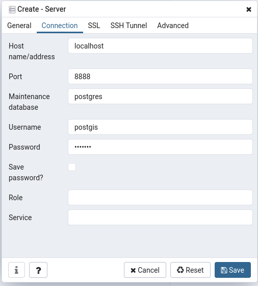

Running docker-compose with postgis and R-Studio
2020-06-21 13:19
In this tutorial, I am going to show how you can use the docker engine to set up two containers, one hosting the rocker/geospatial image and the other one the postgis/postgis image. We will use docker-compose to start up both containers to work with the r-spatial packages and postgis functionality simultaneously in a stable environment. I assume here that the necessary dependencies such as the docker and docker-compose engines are already met.


What we need is a simple .yaml file that defines the parameters of our application. In the example I will demonstrate, the application consists of two services, namely the postigs server and the R-Studio instance. We start with the postgres service by defining which images we are using. This image is found at dockerhub If the images are not found on the local machine, they are pulled from there once we run our application. We also make the container’s naming explicit by using the container_name option and set the restart behavior to always in cases the container breaks down. We also ensure that the container will set up a new user besides the default postgres user by specifying a username and a password. The last part specifies on the left hand the local path on the host machine where the database files are going to be written two, while the right-hand part links to the data directory within the postgis container.
services:
postgres:
image: postgis/postgis
container_name: postgres
restart: always
environment:
POSTGRES_USER: postgis
POSTGRES_PASSWORD: postgis
ports:
- 8888:5432
volumes:
- ~/pgdata:/var/lib/postgresql/data
rstudio:
image: rocker/geospatial
container_name: r-studio
restart: always
environment:
- USER=rstudio
- PASSWORD=supersecret
- ROOT=TRUE
ports:
- 8787:8787
links:
- postgresFor the R-Studio service, we use the geospatial image that comes in very handy in cases you want to do geospatial analysis since a large number of important packages already come preinstalled. We also make the naming of the container explicit and set the restart behavior to always. The rocker images are quite restrictive when it comes to user rights management. Thus, in addition to specifying a user and a password, we also want to enable root access for the case we need to install additional software. This way, our user is added to the sudoer list. However, this option should be treated carefully. We also map a port on the host machine to the exposed port of the container. This way, we can reach the interface by simply accessing http://localhost:8787/ in the browser of our choice. Finally, we declare that the posgres service is linked to the rstudio service. This means that inside the rstudio container, an entry to /etc/hosts called postgres is added, linking to the IP-address this container is found.
When we write the above configuration to a file called docker-compose.yaml starting the application is as simple as running the following command in a shell in the same directory the file is found:
docker-compose upOnce the services are up and running, visit http://localhost:8787/ and enter the username and password for the rstudio service. From here, we can use the RPostgreSQL and RPostgres library to connect to our data base. In the simple example below, we establish a connection and write an sf-Object shipped with the sf package to the database.
library(RPostgreSQL)
library(RPostgres)
library(sf)
# specify connection inputs
db <- 'postgis' # provide the name of your db
host_db = "postgres" # provide the name of the service
db_port = '5432' # specify the port the service is available at
db_user = "postgis" # specify username
db_password = "postgis" # specify password
# establish the connection
con <- dbConnect(Postgres(),
dbname=db,
host=host_db,
port=db_port,
user=db_user,
password=db_password)
# read sample shapefile
shape = st_read(system.file("gpkg/nc.gpkg", package = "sf"))
# write to database in a new table specified by the layer argument
table_name = "test"
st_write(obj = shape, dsn = con, layer = table_name)Since we mapped the data directory to a local directory on our host machine, the data we write into the database is persistent even when the application is no longer running. To query our database now or even after restarting the application we can use more sf functionality to interact with it. Here is a simple example comparing dplyr syntax with the result we obtain from querying the database to unify all polygons which have the same entry in the ‘SID74’ variable.
library(dplyr)
# dplyr way of
shape_dplyr = shape %>%
group_by(SID74) %>%
summarise(AREA = sum(AREA, na.rm = TRUE))
shape_postgis = st_read(con, query = sprintf(paste0('SELECT "SID74", SUM("AREA") as "AREA", ST_UNION(geom) as geom \n',
'FROM \"%s\" \n',
'GROUP BY "SID74";')), table_name)But how can we manage our postgis server now? There are two ways (well, actually three ways I’ll explain in a minute) how we can access the server. The first one is using psql from the host machine. In the configuration file, we specified that the postgis containers port is mapped to the host machine’s port 8888. Well, we simply use that information to connect to the database using psql.
psql --host localhost --port 8888 --dbname postgres --user postgisThe command line will ask us for the password, and then we are connected. Additionally, we can also choose to use a program with a graphical user interface to manage the data base. One which ich highly recommend is pgAdmin. After installing and running the program, we have to specify a new connection. After adding a name for the connection in the General tab we switch to the Connection tab and fill in all the information as in the screenshot below.

You already guessed the third option I promised you before? Well of course we can use the psql approach explained above from the terminal in our R-Studio container. Of course, the hostname will be slightly different, but the basic idea is the same. Now, it comes in handy that we have root access in the R-Studio container, because we are going to need to install external software first, namely the postgres client. Thus we enter the following two lines into the terminal. Enter Yes in case you are asked if you wanted to install the software.
sudo apt update
sudo apt install postgresql-clientNow our container has the psql command installed and we can use a slightly different version of the above command to connect to the databse.
psql --host postgres --port 5432 --dbname postgres --user postgisWhat are the differences here? Well, first the container is not found at localhost but as explained before we have got an entry in the /etc/hosts file for our container name postgres. Additionally, we are connecting directly to the container and not to the mapped port on our host machine which is why we have to specify 5432 as the right port. Besides that, everything remains the same.